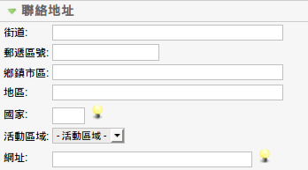

Super Administrator
Super Administrator  Administrator
Administrator  Manager
Manager
新增、編輯場地
To access this screen use: Components -> EventList -> 新增場地 或 點選場地標題
Super Administrator Administrator Manager
應用: 儲存資料後, 停留在同一頁面.
儲存: 儲存資料後, 返回至前一頁.
取消: 放棄此次資料修改.
Help: Opens this help screen.
場地: 輸入場地名稱.
別名: 輸入場地別名.
發佈: 設定場地是否發佈,若為停止發佈,則在前台無法看見該場地. 編輯活動時也無法選擇該場地.
分類說明: 輸入該分類說明.

地址: 輸入場地地址、國家代碼、網址.
活動區域: 選擇該場地所屬的區域, 在編輯活動時 會自動填入活動區域的欄位.
圖片: 選擇屬於該場地的圖片.